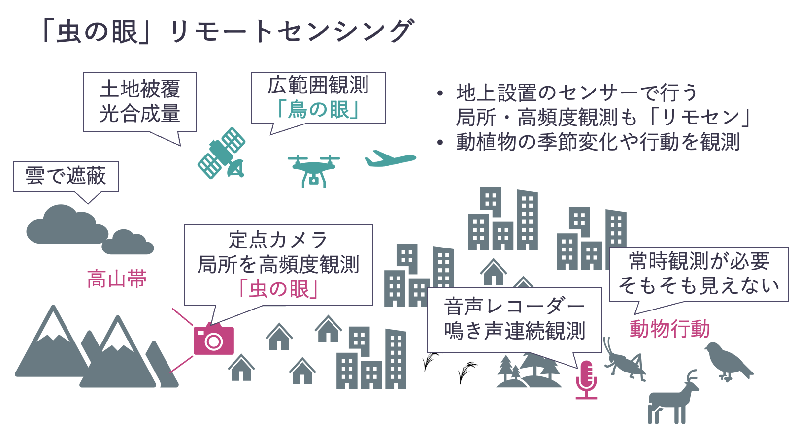

2 生態系リモートセンシングの基礎
リモートセンシング（Remote Sensing、以下「リモセン」）はその名前の通り、対象を遠隔から（Remote）計測する（Sensing）技術の総称です。一般には、人工衛星や航空機、ドローンに搭載されたセンサー（e.g., カメラ）を用いて地球を観測する技術を指しますが、カメラやLiDAR（Light Detection and Ranging）による地上からの観測や、マイクを用いた音響観測もリモセンに含まれます。リモセンの利点には、非接触・非破壊であること、広域を均質かつ効率的に調査でき、空間的なパターンの発見や外挿を行いやすいことがあげられます。生態学においては、植生の分布やその生理学的な状態（e.g., 熱ストレス、光合成量）の観測、動植物の季節的な変化や分布・行動パターンの解明など幅広く活用されています。
2.1 パッシブセンサとアクティブセンサ
2.1.1 パッシブセンサ
まずは、使われるセンサの仕組みからリモセンを分類していきましょう。ここでは人工衛星に搭載されたセンサを用いたリモセンに着目します。
最もよく使われるのは「パッシブセンサ」です。これは、太陽や地球が自然に放射・反射している電磁波（光や赤外線、マイクロ波など）を 受動的に 観測するものです。
少し堅苦しく聞こえるかもしれませんが、実は私たちの「目」もパッシブセンサだと言えます。 私たちの視覚は、以下のようなプロセスを経て世界を認識しています。
- 光源（太陽や照明）から出た光が物体に当たり、反射したものを目がとらえる
- 目には赤・青・緑（Red Green Blue でRGBと呼びます）の三種類の受容体があり、三色の組み合わせで「色」を感じている
植物の葉が緑に見えるのは、葉が緑の光を強く反射し、赤や青を吸収しているからです。一方で、鳥類や昆虫、霊長類以外の哺乳類は人間とは異なった色覚を持っており、中にはヒトよりも細かく色を分解して見ている生き物もいます。

ヒトや動物の目のように、特定の波長の電磁波を受動的に観測するセンサをパッシブセンサと呼び、リモセンに使われる多くのセンサが該当します。電磁波はその波長に応じてさまざまな種類に分類されます。たとえば可視光線や紫外線、赤外線などが挙げられます。

地球を覆っている様々なもの（岩石、植物、水、雲…）はそれぞれ異なる反射特性を持っていますが、これらを判別するために、人工衛星などに搭載されるセンサには光の三原色だけでなく赤外線を観測できるものや、光をより細かい波長解像度で分解して観測することができるものもあります。

例えば植物の葉に含まれるクロロフィル色素は赤色光を吸収し、近赤外線を反射する特性を持っています。したがって近赤外線を撮影できるセンサーを使い、近赤外光が赤色光に比べてどの程度強く吸収されているかを測定すれば、植生の有無やクロロフィル含有量、さらには光合成量を推定することができます。具体的な解析手法については第5章で触れます。
2.2 アクティブセンサ
パッシブセンサが太陽や地球が放射する電磁波を受動的に観測するのに対して、自ら能動的（アクティブ）に電磁波を観測対象（地球表面）に照射し、その反射を観測するセンサ（アクティブセンサ）もあります。アクティブセンサで代表的なものには、SAR（Synthetic Aperture Radar, 合成開口レーダー）やLiDAR（Light Detection and Ranging）があります。これらのセンサは、赤外線よりもさらに波長の長い電磁波やレーザー光を地表に照射し、その反射を観測することで地表面の構造を観測します。アクティブセンサを用いる利点には、昼夜を問わず観測可能なこと、環境条件によらず均質な観測が可能なことが挙げられます。


2.3 鳥の眼、虫の眼
上記のように、「リモセン」というと一般的には人工衛星を用いたリモセンを指すことが多いです。より細かい空間解像度が必要な場合には、航空機やドローンにカメラを搭載して観測を行うこともあります。航空機やドローンはその都度飛ばす必要があるため、撮影回数がどうしても下がりがちです。
では、高解像度かつ高頻度な観測が必要な場合にはどうすれば良いでしょうか。たとえば、植物の日毎の開花数を観測したい場合や、ある場所に訪れる動物の数の時系列変化を観測したい場合などです。思い切ってセンサを地上に固定してしまうのはどうでしょう？広域を観測できるリモセンの利点は弱くなりますが、時間的に連続した観測ができるようになります。
この授業では、上空から広域を観測するリモセンを「鳥の眼」リモセン、定点から狭い領域を高頻度に観測するリモせんを「虫の眼」リモセンと呼びます。「虫の眼」的なリモセンとして、近年の生態学分野では毎日決まった時間に自動的に録音を行う音声レコーダーを用いた観測手法が普及しつつあります。鳥類やカエル類、セミやコオロギといった昆虫など、音を種内でのコミュニケーションに用いる生物は多く存在します（ヒトもそうですね）。環境中に広がる鳴き声を観測することで、こういった動物の行動や生物季節について知ることができます。

例えば、鳥類を対象とした大規模な音響観測ネットワークを用いた研究では、都市化による光害が鳥類の活動期間を延ばしていることが指摘されています（Pease and Gilbert (2025)、下図）。

2.4 より深く知りたい方へ
以下の資料に加えて、さくらインターネットが運営する「宙畑（そらばたけ）」の入門記事もおすすめです。ライトで読み物的にも面白い解説記事や、最近の宇宙ビジネスに関するインタビューなども豊富に読めます。